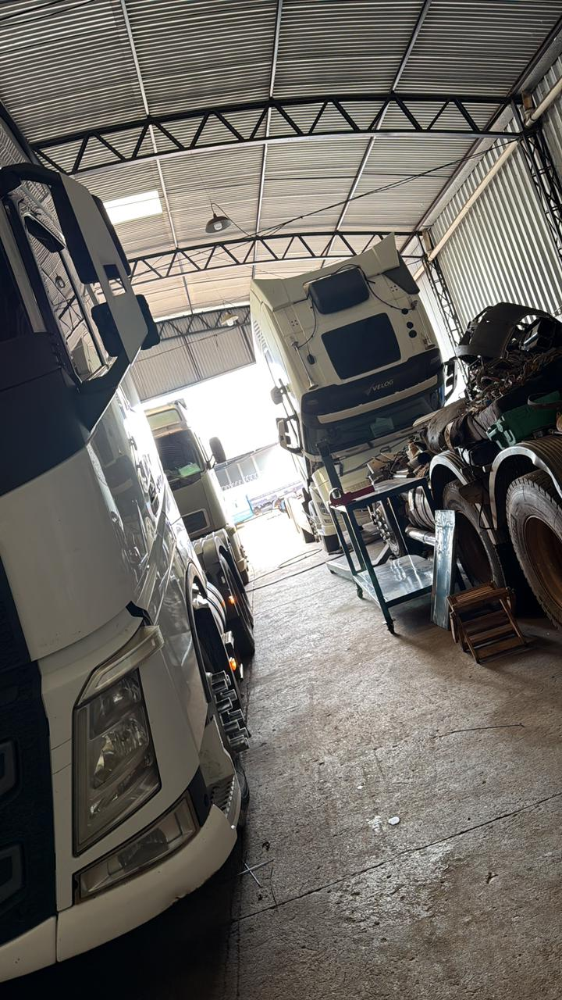

Troca de óleo
Lubrificação completa com qualidade e produtos homologados para Volvo.

Oficina especializada exclusivamente em caminhões Volvo. Manutenção, socorro mecânico e atendimento onde você estiver — 24 horas por dia, 7 dias por semana.
Atendimento imediato, qualquer horário.
Equipe móvel na estrada, pátio ou oficina.
Diagnóstico, reparo e entrega com segurança.
Manutenção especializada para garantir desempenho, segurança e confiança na estrada.
Lubrificação completa com qualidade e produtos homologados para Volvo.
Segurança e estabilidade na estrada, em qualquer carga.
Soluções completas em sistemas elétricos e eletrônicos Volvo.
Scanner e equipamentos de precisão para evitar problemas.
Plano de manutenção para reduzir paradas e custos da frota.
Equipe móvel que vai até o seu Volvo onde ele parou.
 100% VOLVO
100% VOLVO
Enquanto a maioria atende qualquer marca, nós escolhemos um caminho diferente: mergulhar fundo na engenharia Volvo. Isso significa diagnóstico mais rápido, peças certas, mão de obra treinada e seu caminhão voltando à estrada no menor tempo possível.
Galpão amplo, equipamentos pesados e equipe completa para atender toda a sua frota com agilidade.



O que caminhoneiros e transportadoras falam sobre a Forte Auto Diesel.
"Parei na BR de madrugada e em menos de 1h a equipe da Forte estava lá. Resolveram no local e ainda acompanharam até eu voltar pra estrada. Atendimento que salva."
"Levo meu Volvo na Forte há mais de 3 anos. Mexem só com Volvo, então sabem exatamente onde olhar. Nunca tive retrabalho. Preço justo e confiança de sobra."
"Toda a nossa frota passa pela Forte Auto Diesel. Programação de manutenção em dia, emergências resolvidas rápido e relatório completo. Parceiro de verdade."
Fale direto com a nossa equipe de socorro. Atendemos emergências em caminhões Volvo na estrada, em pátios e em qualquer ponto da região — a qualquer hora.